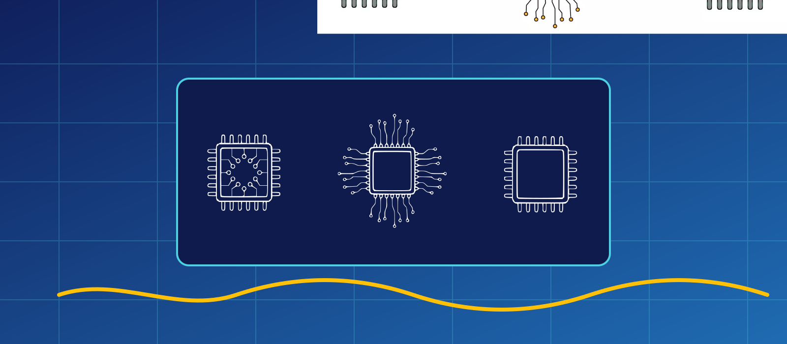
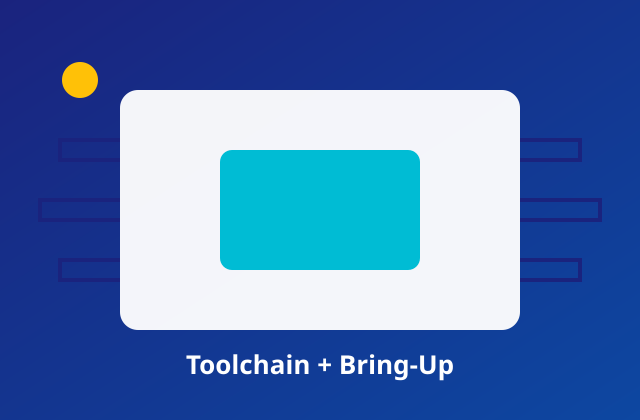
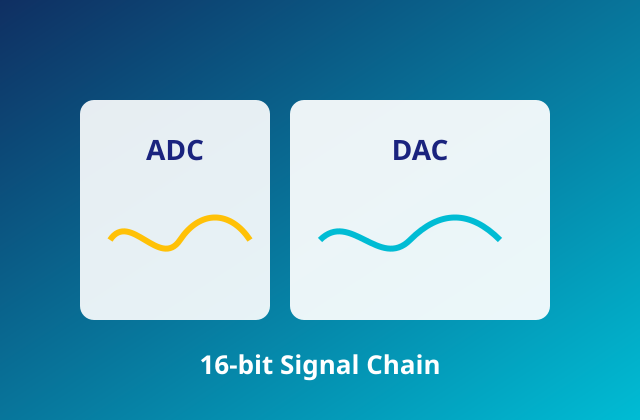
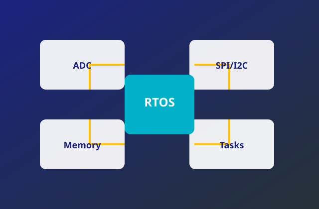

I build sensor-rich, real-time, production-minded systems focused on traceability, power awareness, and dependable field performance.
Start a Conversation
Foundation & Toolchain Mastery Configured Keil MDK, J-Link debugging workflow, startup code validation, and deterministic GPIO control as a first milestone. View Case Study →
High-Precision Analog Implemented calibrated 16-bit ADC sampling, DAC waveform output, and digital filtering for stable low-noise measurements. View Case Study →
Complete Integrated System Combined ADC pipelines, SPI/I2C sensors, robust memory planning, and RTOS task orchestration into one production-style stack. View Case Study →